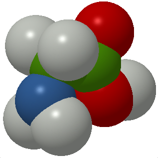

Icon
The smallest of the 20 aminoacids commonly found in proteins, starting with a G letter,
Glycine
, is now the GAMGI graphic symbol:

The corresponding
Tango
icons, beautifully created by
Jakub Szypulka
, can be seen here:
48x48
32x32
22x22
16x16
Home